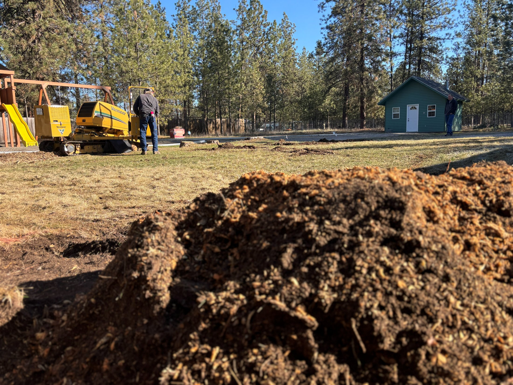

Stump Removal & Cleanup
Chips hauled off, hole backfilled, ground ready for whatever's next.
Grinding one stump generates a surprising pile of chips — often several times the volume of the stump itself. Removal and cleanup is the option where we take that material with us and leave you clean, compacted soil instead.
What's included
- Everything in stump grinding — this builds on the grinding service, it doesn't replace it.
- Chip and debris haul-off — grindings loaded out and disposed of, not piled at the curb.
- Root and wood removal — larger surface roots and trunk chunks pulled rather than left buried.
- Topsoil backfill — the void filled with clean soil and tamped so it doesn't sink over the next season.
- Grade match — finished level with the surrounding yard, ready for seed, sod, or a new planting.
- Final walkthrough — we look at the finished spot with you before we leave.
Good fit when
You're building on the spot
Patios, sheds, fence posts, and footings need soil, not a bed of wood chips that will decompose and settle.
You're planting a replacement tree
New roots do better in clean backfill than in a pocket of decaying grindings.
You want the yard finished, not just cleared
No leftover chip pile for you to deal with on a weekend.

Chips loaded out

Backfilled and graded
Add-on option: if you want the grindings for mulch instead of hauled away, say so when you request the estimate — we'll leave them piled where you want them and adjust the scope accordingly.